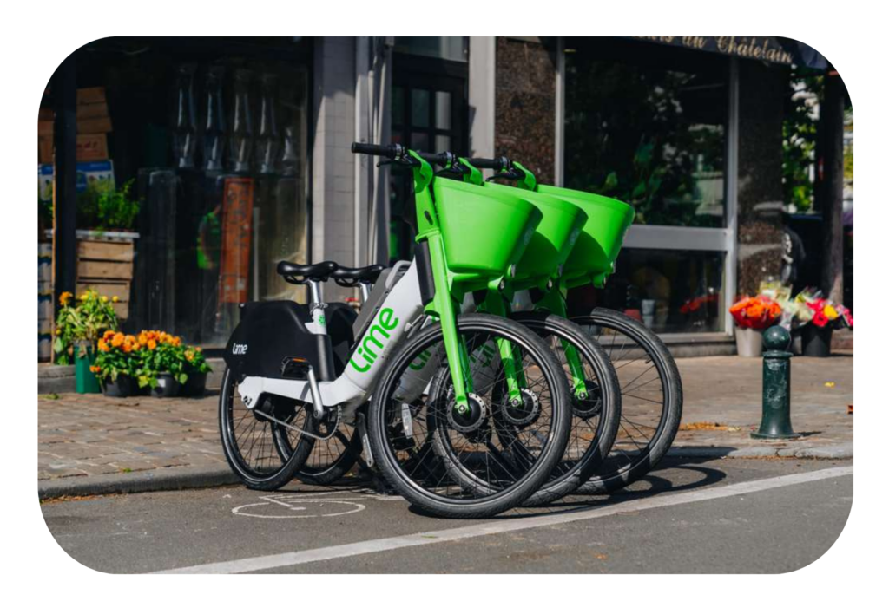
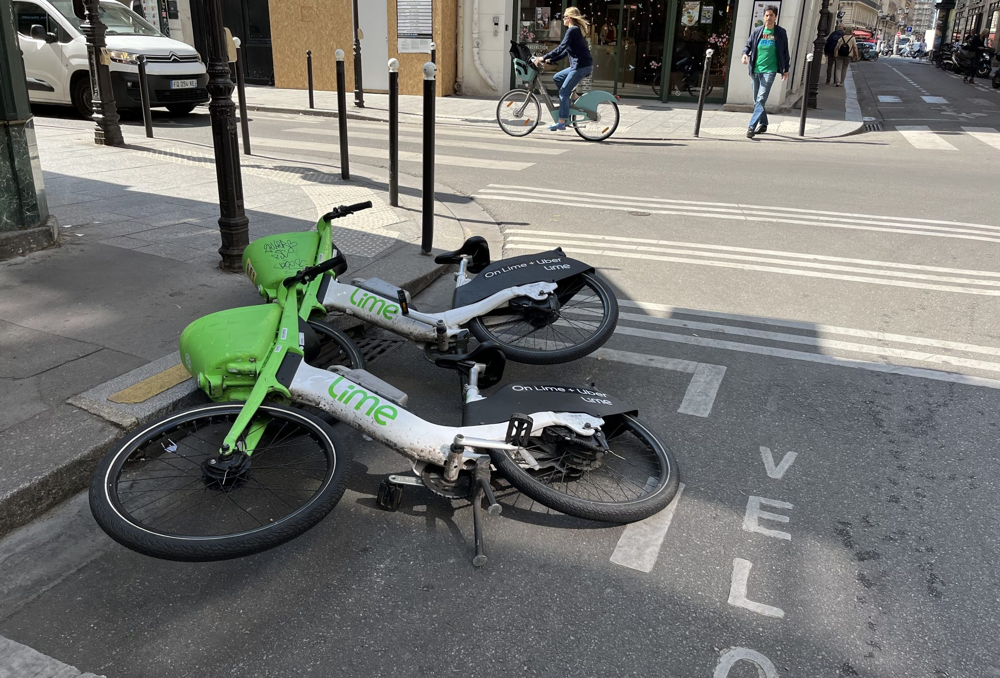

Contexte économique et transition du modèle
Depuis février 2024, le service public VéloBleu a été arrêté et remplacé par des opérateurs privés, dont LIME, dans le cadre d’une délégation d’occupation de l’espace public.
Cette transition marque une évolution majeure du modèle économique de la mobilité douce à Nice : le passage d’un service public à financement majoritairement public vers un service marchand privé, fonctionnant selon une logique de marché, tout en restant encadré par la puissance publique.
- les coûts élevés supportés par la collectivité dans le cadre du service public,
- la volonté de réduire la dépense publique et le déficit structurel,
- la recherche d’une efficacité économique accrue par la mise en concurrence.
Présentation globale et statut économique
- Nom : LIME
- Statut : Entreprise privée
- Secteur : Mobilité urbaine / micro-mobilité
- Type de service : Location de vélos et trottinettes électriques en libre-service
- Mode de fonctionnement : Free-floating (sans stations fixes)
- Zone d’activité : Ville de Nice et métropole
- Propriétaire du capital : Actionnaires privés
- Objectif principal : Rentabilité économique et croissance de l’activité
LIME est un acteur privé, contrairement à Lignes d’Azur et VéloBleu, ce qui implique une logique de profit et une rémunération du capital.
Logique économique et organisation du service
LIME s’inscrit dans une logique de production marchande :
- l’usager paie le prix réel du service,
- les recettes doivent couvrir les coûts de production,
- l’objectif est de dégager un résultat positif.
Le modèle repose sur :
- une tarification à l’usage (déblocage + minutes),
- une application numérique,
- une gestion flexible du parc (free-floating).
Ce modèle permet une adaptation rapide de l’offre à la demande, mais génère aussi de nouveaux coûts (redistribution, maintenance).
Le free-floating, c’est-à-dire l’absence de stations fixes, permet une grande flexibilité pour les usagers, mais entraîne également des coûts supplémentaires de gestion, de maintenance et de redistribution du matériel.
Création de valeur ajoutée et contribution au PIB
LIME est une entreprise privée opérant dans une logique de production marchande. Contrairement à une entreprise publique, son objectif principal est la réalisation d’un profit et la rémunération du capital investi.
L’entreprise crée de la valeur ajoutée, c’est-à-dire de la richesse économique, grâce à son activité de location de services de mobilité. Cette valeur ajoutée correspond à la richesse créée après déduction des consommations intermédiaires (maintenance, énergie, logistique, services numériques).
La création de valeur ajoutée repose sur la combinaison des facteurs de production :
- Le facteur travail : salariés, techniciens, agents de maintenance et logistique
- Le facteur capital : vélos électriques, batteries, application numérique, systèmes informatiques et équipements
La valeur ajoutée produite par LIME contribue au PIB local et national, puisque l’activité est réalisée sur le territoire français.
Cette valeur ajoutée est ensuite répartie entre plusieurs agents économiques :
- Les salariés, sous forme de salaires
- L’État, sous forme d’impôts et taxes
- Les actionnaires, sous forme de dividendes, ce qui correspond à la rémunération du capital
- L’entreprise elle-même, par l’autofinancement et les investissements futurs
Ainsi, contrairement aux services publics de mobilité, LIME fonctionne selon une logique de rentabilité économique privée. Elle reste toutefois un acteur productif de l’économie, contribuant à la croissance économique tout en participant à la transition écologique.
Contribution économique directe et indirecte
Contribution directe
La contribution économique directe de LIME repose sur :
- la création d’emplois locaux (maintenance, logistique, rechargement, support),
- les dépenses d’exploitation réalisées sur le territoire (prestataires, entrepôts, services),
- les investissements en capital matériel (vélos, trottinettes, batteries).
Ces activités génèrent de la valeur ajoutée, redistribuée sous forme :
- de salaires,
- de revenus pour les prestataires locaux,
- de bénéfices pour les actionnaires.
Contribution indirecte
Indirectement, LIME participe à :
- la réduction des embouteillages (gain de productivité pour les entreprises),
- la diminution des coûts liés à la pollution et au bruit,
- l’amélioration de l’attractivité touristique et économique du centre-ville.
Ces effets positifs correspondent à des externalités positives, mises en avant dans le cours d’économie.
Capital, financement et modèle économique de LIME
Le capital de LIME est entièrement privé. Il est apporté par des investisseurs, des fonds d’investissement et des actionnaires qui prennent un risque financier dans l’objectif d’obtenir une rémunération du capital. Contrairement à une entreprise publique ou à un service public local, LIME fonctionne selon une logique de rentabilité et de maximisation du résultat économique.
Dans ce cadre, la performance financière de l’entreprise est centrale. Lorsque LIME dégage un résultat net positif, une partie de la richesse créée peut être redistribuée aux actionnaires sous forme de dividendes. Les actionnaires attendent donc :
- Une rentabilité économique suffisante
- Une croissance du chiffre d’affaires
- Une valorisation du capital investi à moyen et long terme
Cette logique distingue clairement LIME des services publics de mobilité, dont le capital public n’est pas rémunéré par des dividendes mais par des bénéfices collectifs.
Les revenus de LIME proviennent principalement de la facturation directe aux usagers, ce qui correspond à une production marchande. Les utilisateurs paient un prix en échange du service rendu, selon une tarification à l’usage (déblocage et durée d’utilisation) ou via des abonnements. Ces recettes constituent le chiffre d’affaires de l’entreprise.
À ces revenus s’ajoutent :
- Des partenariats commerciaux (publicité, accords avec des acteurs privés)
- Parfois des redevances ou des accords contractuels avec les collectivités locales, en échange de l’occupation de l’espace public
Il est important de souligner que LIME évolue dans une logique de marché concurrentiel, en concurrence avec d’autres opérateurs de micro-mobilité. L’entreprise ne bénéficie pas de subventions publiques directes systématiques : elle doit donc couvrir ses coûts de production (achat du matériel, maintenance, logistique, personnel, systèmes numériques) grâce à ses propres recettes.
Cette contrainte oblige LIME à rechercher une efficacité économique élevée, une optimisation des coûts et une adaptation permanente de l’offre à la demande des usagers.
Ainsi, le modèle économique de LIME repose sur les mécanismes classiques du marché : offre, demande, concurrence, prix et rentabilité, tout en étant encadré par la puissance publique afin de limiter les externalités négatives liées à l’usage de l’espace urbain.
Dépenses
| Poste de dépense | Montant estimé | % du total |
|---|---|---|
| Maintenance du parc (vélos / trottinettes) | 2,0 M€ | 35% |
| Personnel (techniciens, logistique, rebalancing) | 1,8 M€ | 30% |
| Achat et renouvellement du matériel | 1,2 M€ | 20% |
| Batteries, recharge et électronique embarquée | 600 k€ | 10% |
| Application, serveurs et systèmes numériques | 300 k€ | 5% |
Les données ci-dessous correspondent à des estimations économiques basées sur des modèles de coûts observés dans le secteur de la micro-mobilité (entreprises privées de free-floating), en l’absence de données comptables publiques détaillées.

Limites économiques du modèle
Le modèle économique de LIME dépend fortement d’un taux d’utilisation élevé et reste sensible à la saisonnalité, aux conditions climatiques et à la concurrence.
Les coûts de maintenance, de logistique et de régulation constituent également des contraintes importantes pour la rentabilité du service.
Le modèle de free-floating peut également engendrer des problèmes de stationnement anarchique dans l’espace public. Ces situations génèrent des externalités négatives, telles que la gêne pour les piétons, l’encombrement des trottoirs ou des pistes cyclables, et impliquent des coûts supplémentaires de régulation et de redistribution pour l’entreprise et la collectivité.
Comparaison implicite entre modèle public et privé
Contrairement à un service public financé par la collectivité, LIME doit assurer sa viabilité économique par le marché. Cette logique explique à la fois sa flexibilité et son exposition accrue aux risques économiques.
La collectivité conserve ainsi un rôle de régulateur, afin de concilier efficacité économique, intérêt général et transition écologique.
Importance économique de LIME dans la Métropole
LIME occupe une place croissante dans l’économie locale de la Métropole Nice Côte d’Azur en tant qu’acteur privé de la micro-mobilité urbaine. En proposant une alternative flexible aux transports traditionnels, l’entreprise participe à la réorganisation des déplacements urbains, notamment pour les trajets courts.
Sa présence contribue à :
- réduire la congestion automobile,
- fluidifier les déplacements dans les zones denses,
- compléter l’offre de transports collectifs (tram, bus).
LIME joue ainsi un rôle d’acteur économique complémentaire, intégré dans l’écosystème local de mobilité, tout en répondant à une demande croissante de transports rapides et non polluants.
Taux d'utilisation de transports non polluants
Les véhicules LIME fonctionnent à l’électricité et n’émettent aucune émission directe de CO₂ lors de leur utilisation
- 100 % des trajets réalisés avec LIME sont non polluants à l’usage,
- une part significative des trajets remplace des déplacements auparavant réalisés en voiture. / an
- LIME contribue donc directement à l’augmentation du taux de mobilité non polluante dans la Métropole, notamment pour les déplacements courts, qui sont les plus polluants en transport thermique.
À titre de comparaison, l’ancien service VéloBleu présentait également un taux de mobilité non polluante de 100 %.
Impact économique du non-polluant
Le caractère non polluant du service génère plusieurs impacts économiques positifs :
- réduction des dépenses de carburant pour les usagers,
- baisse des coûts de santé publique liés à la pollution atmosphérique,
- diminution des nuisances sonores,
- amélioration de la qualité de vie urbaine.
Selon la logique économique , la réduction des externalités négatives permet une utilisation plus efficace des ressources collectives et améliore le bien-être global.
Améliorations déjà mises en place par LIME
LIME a déjà engagé plusieurs améliorations visant à renforcer l’efficacité économique et environnementale du service :
- amélioration de la robustesse du matériel afin de réduire les coûts de maintenance,
- optimisation logistique du rechargement des batteries,
- amélioration des applications numériques (géolocalisation, paiement, données),
- collaboration avec les collectivités pour mieux encadrer l’usage de l’espace public.
Ces actions relèvent d’une stratégie d’optimisation des coûts et de la productivité, essentielle pour une entreprise privée.
Améliorations non polluantes proposées
Afin d’améliorer encore la performance économique et environnementale du service, plusieurs pistes peuvent être envisagées :
- utilisation de batteries plus durables et recyclables,
- recours à des véhicules de recharge électriques ou à vélo,
- mise en place de zones de stationnement dédiées pour limiter le désordre urbain,
- incitations tarifaires pour les trajets se substituant à l’usage de la voiture,
- intégration renforcée avec les transports publics.
- élargissement de l’offre de micro-mobilité avec des scooters électriques, adaptés aux trajets intermédiaires et venant compléter les vélos et trottinettes,
Conclusion
Le cas de LIME illustre les enjeux économiques des transports non polluants dans un cadre marchand. L’entreprise contribue à la création de richesse, à la transition écologique et à la mobilité urbaine, tout en étant soumise à des contraintes de rentabilité.
Ce modèle hybride, combinant logique de marché et encadrement public, constitue aujourd’hui un levier essentiel des politiques de mobilité durable.